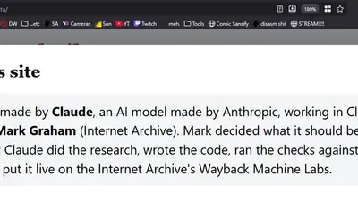

Maladroithe
@maladroithe.bsky.social
· 11/23 05:43· 命中「Claude AI」
I have zero idea if this is true or not but it is *extremely* rabbi-coded
 時事2026.11.23
時事2026.11.23
 時事2026.11.23
時事2026.11.23
 生活2026.11.21
生活2026.11.21
 生活2026.11.20
生活2026.11.20
Social Lab（OpView 社群口碑資料庫）每週彙整各平台熱門事件。榜上的數據以圖表呈現， 這裡列出每週彙整的標題與觀測期間，點進去看完整排行。
 PTT
PTT
 Facebook
Facebook
 Dcard
Dcard
 YouTube
YouTube
 新聞
新聞
Social Lab 依社群聲量統計的各平台人氣意見領袖前三名。
Bluesky 的全站熱門話題，以英語圈的娛樂、體育、政治為主，僅供參考。
以 30 小時內、依讚數與轉發數排序，已過濾掉 AI 繪圖標籤與明顯洗版內容。
I have zero idea if this is true or not but it is *extremely* rabbi-coded
NEW: Jeffries vows sweeping congressional investigation into NVIDIA and Trump Commerce Secretary Howard Lutnick following the company's decision to reinstate Jensen Huang as CEO
A whole lot of uncritical acceptance of China as The Enemy on here and it’s going to lead to much worse outcomes. The issue with Huang/Trump/Nvidia/the AI bubble is the oligarch impunity, not breathing life into a new Cold War that will be a disaster for the U.S. specifically & the world generally.
"But while AI enthusiasts rush to crunch the numbers on the new Anthropic millionaires, it’s harder to find data on how that poorer half of America is doing. The USDA stopped tracking household food insecurity in September 2025, claiming that conducting the survey was 'redundant' and 'politicized.'”
Jensen Huang and Nvidia have officially been deemed Too Big To Fail. They are both too important to the future of AI, the stock market, and Trump’s own pocketbook. Rules, standards, and accountability be damned.
Five thousand AI workers now have as much money as the 45 million poorest Americans.
This guy's daughter works for OpenAI
Lawyer up. That's not how any of this works. Nvidia reinstated Jensen Huang, citing input from senior U.S. officials declaring he posed no national security risk. Congress to the FBI: Who decided the man at the center of massive AI chip diversion to our main strategic competitor is not a risk?
like, this is legitimately much worse than not firing him in the first place, and nvidia isn’t openAI
A woman says her landlord evicted her “despite receiving an email from the leasing office saying she’d have an extension to pay her $4,000 in overdue rent. That official communication, it turned out, was written by the landlord’s AI assistant, who claims that the AI did so without their knowledge…”
Schumer is promising oversight and investigations. Cool, cool. His daughter works for OpenAI! The broligarchy has spent millions on corporate Dems and the Establishment. Do you think anything will happen?
Anthropic: today we solved the Reimann Hypothesis Markets: hmm, ok, that is worth negative 80 billion dollars NVidia: today we have reinstated our disgraced CEO Markets: hmm, ok, that is worth positive one trillion dollars
"[W]e all live in an Nvidia-state. What you need to know about living in an Nvidia-state is that it is not a democracy . . . the Nvidia-state governs via the logic of a hostage situation. You have two choices: Let AI rip while tech leaders act with impunity, or watch the economy enter a recession."
Gemini: Things are looking up! Unfortunately, that's because you're in hell and there is no other direction to look.
Canada’s cybersecurity agency says it’s tracking ‘ongoing’ AI agent cyberattacks targeting Canadian computer systems The Canadian Centre for Cyber Security issued an advisory over the weekend warning Canadians to be prepared for a wave of AI-powered cyberattacks
i see people discovered the wayback "labs" thing, and unfortunately the AI brainrot there goes all the way to the very top; the director himself put his name on several of these vibe coded slop projects

Nvidia reinstated Jensen Huang hours after Trump pressured them to restore him, despite unresolved Chinese intelligence concerns. Shares surged 25%. Trump's family held Nvidia stock as the company faced scrutiny over billions in "circular AI financing".